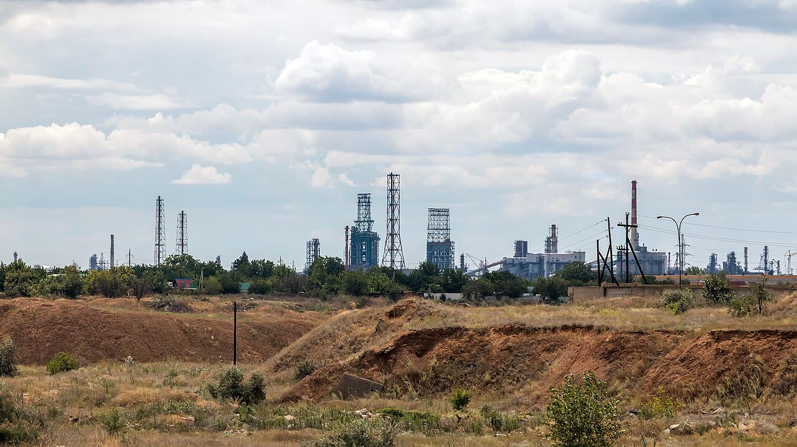

Volgograd, droni uccidono quattro lavoratori nella zona della raffineria Lukoil
Non appoggiamo i raid sulle raffinerie perché tolgono gasolio all'Europa, ma i dati del gasolio non mostrano rialzi e questa raffineria era ferma da ottobre.
Redazione Contrappunto · aggiornato il 13.11.2026


Nella notte tra il 12 e il 13 novembre 2026 droni ucraini hanno attaccato la regione di Volgograd, grande città del sud della Russia sul Volga. Il governatore Andrey Bocharov ha detto che quattro dipendenti della zona industriale meridionale sono stati uccisi e due ricoverati. Nella zona si trova la raffineria di Lukoil (la seconda compagnia petrolifera russa): tratta circa 14,8 milioni di tonnellate di greggio l'anno, ed è già stata colpita il 2 ottobre. Una raffineria trasforma il petrolio greggio in benzina, gasolio e altri carburanti. Dal 30 ottobre Kiev ha ripreso a colpire le raffinerie russe, mentre gli inviati americani Steve Witkoff e Jared Kushner trattano con Mosca e Kiev una fine della guerra.
Vedi di più: 5 parole spiegate, cosa si racconta
Cosa si raccontaIl racconto è questo: i droni hanno incendiato un impianto della zona industriale (il governatore parla di «detriti» di droni), quattro lavoratori sono vittime, a Volgograd si formano code ai distributori e i prezzi della benzina salgono di 50 copechi (Meduza, The Moscow Times). Il nome della raffineria lo fanno canali ucraini di monitoraggio e il sito russo in esilio Astra, sulla base di foto e video (Kyiv Post, bne IntelliNews); il governatore non nomina l'impianto, e la nota riportata da TASS accusa il «criminal Kiev regime». Lo Stato maggiore ucraino non ha rivendicato questo attacco e Lukoil non ha commentato (bne IntelliNews, al momento della stesura). [Meduza] [The Moscow Times] [TASS] [Kyiv Post] [The Kyiv Independent] [bne IntelliNews]
- Bocharov
- Andrey Bocharov, governatore della regione di Volgograd: la sua dichiarazione sulle vittime è la fonte di tutte le testate lette, russe e ucraine.
- Lukoil
- Compagnia petrolifera privata russa; la raffineria di Volgograd (Lukoil-Volgogradneftepererabotka) è tra le dieci più grandi del paese e rifornisce soprattutto il sud (Kyiv Post).
- Astra
- Testata russa indipendente in esilio: ha identificato l'impianto analizzando foto di testimoni (The Moscow Times).
- Brent
- Il petrolio di riferimento per l'Europa; qui lo leggiamo come prezzo giornaliero «spot» dell'EIA, l'agenzia statistica del governo americano sull'energia.
- Oil Bulletin
- Rilevazione settimanale della Commissione europea sui prezzi al consumo dei carburanti nei paesi UE, con le tasse.
- Il governatore di Volgograd, Andrey Bocharov, dice che nella notte del 13 novembre un attacco di droni ucraini ha ucciso quattro dipendenti della zona industriale meridionale e ne ha ricoverati due (The Moscow Times, TASS, Meduza).
- Chi dice che nella zona c'è la raffineria Lukoil e che è stata colpita sono canali ucraini di monitoraggio e Astra; il governatore non nomina l'impianto e lo Stato maggiore ucraino non ha rivendicato (Kyiv Post, bne IntelliNews).
- Il gasolio medio UE (Oil Bulletin, con tasse) costava 2.097 euro per mille litri il 9 novembre contro 2.146 il 26 ottobre; in Italia 2.218 il 9 novembre. Il Brent spot EIA è passato da 120,15 dollari il 30 ottobre a 92,14 l'11 novembre. Dati precedenti a questo attacco.
- Secondo Reuters, citata da Meduza, la raffineria aveva fermato del tutto la lavorazione dopo un attacco di inizio ottobre (il 2, per The Moscow Times e Kyiv Post); bne IntelliNews non segnala nuovi arresti.
Meduza e The Moscow Times riportano il governatore Bocharov: detriti di droni, incendi in una zona industriale, quattro lavoratori vittime. La raffineria Lukoil la nominano canali ucraini e Astra; Kiev non ha rivendicato (bne IntelliNews). Per Reuters, citata da Meduza, era già ferma dopo l'attacco di inizio ottobre: l'effetto di questo raid sulle forniture è dubbio. I raid sulle raffinerie non li appoggiamo perché tolgono gasolio al mercato. Il Brent è sceso, ma è greggio: il gasolio UE era a 2.097 euro per mille litri il 9 novembre, sotto i 2.146 del 26 ottobre. Nessun rialzo, per ora. Restano le vittime. [1] [2] [6] [7] [8]
La verifica punto per punto3 passaggi, 9 fonti
Qui sotto ogni cosa scritta sopra, una per una, con le fonti. Confermato: lo dice un documento originale o più fonti lette. Plausibile: lo riportano fonti serie, ma non abbiamo letto l'originale. Discordante: le fonti danno numeri diversi, e diciamo quali. Ipotesi e Opinione sono il nostro ragionamento, separato dai fatti.
L'attacco
Nella notte del 13 novembre il governatore della regione di Volgograd, Andrey Bocharov, ha scritto su Telegram che la caduta di detriti di droni aveva provocato «incendi localizzati» in una zona industriale; al mattino ha detto che quattro dipendenti della zona industriale meridionale erano stati uccisi e due ricoverati, e che a Svetly Yar sono state danneggiate finestre e balconi di tre palazzi e di un centro giovanile, senza feriti (The Moscow Times, Meduza, TASS). Il nome della raffineria Lukoil lo fanno canali ucraini di monitoraggio e Astra, in base a foto e video; Meduza dice di non aver confermato in modo indipendente il sito e il governatore non nomina l'impianto (bne IntelliNews, Kyiv Post). Lo Stato maggiore ucraino non ha rivendicato l'attacco e Lukoil non ha commentato (bne IntelliNews, al momento della stesura). Il ministero della Difesa russo dice di aver intercettato 1.198 droni in una notte; è un dato russo non verificato (bne IntelliNews). La raffineria, secondo Reuters citata da Meduza, aveva fermato del tutto la lavorazione dopo un attacco di inizio ottobre; The Moscow Times e Kyiv Post datano l'attacco al 2 ottobre e Kyiv Post scrive che la sospensione fu totale. Non abbiamo letto notizie di una ripartenza e bne IntelliNews scrive che nessun nuovo arresto è stato segnalato dopo il raid del 13 novembre: se era ancora ferma, l'effetto di questo raid sulle forniture è ancora più dubbio.
Cosa dicono i prezzi
Il gasolio è il dato che conta, perché un raid su una raffineria toglie soprattutto benzina e gasolio e non greggio. L'Oil Bulletin della Commissione europea (prezzi con tasse, euro per mille litri) dà per la media UE il gasolio a 2.146 il 26 ottobre, 2.153 il 2 novembre e 2.097 il 9 novembre; in Italia, il 9 novembre, 2.218. La benzina UE è a 1.954, 1.929 e 1.877; in Italia, il 9 novembre, 1.995. Il Brent spot per l'EIA (agenzia statistica del governo americano sull'energia) è stato 120,15 dollari al barile il 30 ottobre, 97,83 il 6 novembre, 91,03 il 9, 90,16 il 10 e 92,14 l'11 novembre, ultimo dato pubblicato. Sono prezzi precedenti all'attacco di Volgograd: non misurano l'effetto di questo raid né isolano quello dei precedenti. In Russia la benzina costa in media 98 rubli al litro, circa il 16% in più dall'inizio dell'anno (The Moscow Times, dato al 2 novembre). Secondo Reuters citata da Kyiv Post, i raid hanno ridotto di circa il 30% la lavorazione di petrolio in Russia dalla fine di ottobre.
Il nostro punto
Non appoggiamo i raid sulle raffinerie russe perché, togliendo gasolio e benzina al mercato, possono far salire l'energia in Europa, che finanzia l'Ucraina. Il Brent in calo da solo non li assolve, è greggio; ma il gasolio UE al 9 novembre è sotto il livello del 26 ottobre e lo diciamo: finora i dati non mostrano il rialzo. Questa raffineria, poi, era già ferma da ottobre. Il costo vero sono quattro lavoratori vittime il giorno dopo i colloqui di Witkoff e Kushner con Putin, e una trattativa che i raid non aiutano.
Fonti9, tutte con il link
- Ukrainian drone attack sparks fire at Volgograd oil refinery, killing four. Lines form at gas stations across city. (13 novembre 2026) (Meduza) · consultata il 13.11.2026
- Ukrainian Drone Attack Kills 4 Workers, Sparks Fire at Volgograd Oil Refinery (13 novembre 2026) (The Moscow Times) · consultata il 13.11.2026
- Four people dead, two injured in drone attack on Russia’s Volgograd (13 novembre 2026) (TASS) · consultata il 13.11.2026
- Nearly 1,200 Ukrainian Drones Target Russia in Massive Overnight Assault, Lukoil Refinery Ablaze (13 novembre 2026) (Kyiv Post) · consultata il 13.11.2026
- The Kyiv Independent, pagina principale del 13 novembre 2026 (aggiornamento delle 3:44 su Volgograd) (The Kyiv Independent) · consultata il 13.11.2026
- Missile War Monitor: Drone attack on Volgograd's refinery district kills four workers as Russia claims 1,198 drones downed overnight (13 novembre 2026; letta la parte su Volgograd) (bne IntelliNews) · consultata il 13.11.2026
- Europe Brent Spot Price FOB, dati giornalieri (ultimo dato 11 novembre 2026) (U.S. Energy Information Administration) · consultata il 13.11.2026
- Weekly Oil Bulletin, serie storica dei prezzi con tasse, media UE (righe del 26 ottobre, 2 e 9 novembre 2026); archiviato nelle prove il 13 novembre (Commissione europea) · consultata il 13.11.2026
- Weekly Oil Bulletin, prezzi con tasse per paese: il file, nominato «…2026-09-21.xlsx», contiene la rilevazione del 9 novembre 2026 (data nella cella A2); archiviato nelle prove il 13 novembre (Commissione europea) · consultata il 13.11.2026
Testo preparato con strumenti di intelligenza artificiale e pubblicato senza revisione umana. Come lavoriamo